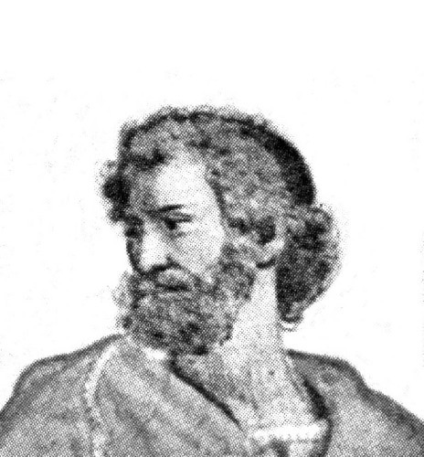
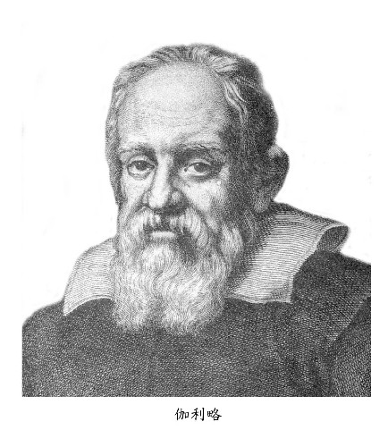

比塞塔即将倾倒

伽利略曾经从比塞塔上端同时将两个重量不同的金属球落下，证实了物体降落的速率与重量无关，它们确实同时抵达地面。

图：亚理斯多德（Aristotle，希腊人，公元前384～322年）〈号称学问之父〉

图：伽利略（G. Galilei，意大利人，公元1564～1642年）伽利略研究数学、物理、天文皆有成就，重要发现有：自由落体运动、单摆等时摆动性，其中最出名的是支持波兰人哥白尼的地球环绕太阳转动的理论。他也是头一个自制望远镜去观测天空的人。
比塞塔是国际文化纪念物与历史场所委员会提名意大利比萨城的奇迹广场（包括大教堂、洗礼堂、比塞塔和墓园）为世界文化遗产1987年4月，。因此比塞塔的情倾斜是天经地义的，不能去改变它。在我们日常生活中，若有一个东西倾倒了，我们的直接观念是把它扶正，作作好事，但世人却认为将比塞塔扶正是罪恶的，有事实为证，1983年的英国电影《超人III》中叙述有一个邪恶的超人，专门在世界各地「做坏事」，其中所作的一件恶事是把比塞塔扶正了，电影结局是善良超人又将比塞塔恢复到原来倾斜的角度。
比塞塔会倾倒吗？
比塞塔（Torre di Pisa）是意大利城比萨大教堂的独立式钟楼，位于比萨大教堂的后面。
这座名闻全球的斜塔，如果想不出有效方法加强它的话，可能在今天晚上就要倒下来了!提起这位「老太太」（意大利人对于比塞塔的称呼）高寿已近900岁，早已病入膏肓，随时随刻都可能寿终正寝。
早在1173年8月9日，比塞塔便已开始兴工建筑，由当时的名建筑师比萨诺（Pisano）负责设计。在设计的时候，由于过份重视了艺术与美观，忽略了土质与地基。因此，才造了三层半，便发现该塔已有倾斜的现象。该塔尚未完工，比萨诺便于1185年去世。有人说他因为闯下了这个大祸而急死。真相如何？只有去问上帝。
大约90年之后，才有第二位名叫西蒙乃（Simone）的建筑师继续造下去。谁知这位建筑师也是外行，不从加宽加深地基着想，却反而继续从第5、6、7层继续盖上去。他的补救方法可说是「头痛医头，脚痛医脚」。原来他只在倾斜的另一方向加重一些，希望得到平衡，不再继续倾斜。这方法当然是无效的。
有人说：「“斜塔”是原设计人比萨诺故意耍的噱头，目的是在震惊世界，使人感觉得新奇。」但事实上是那儿地下的沙土很松，并且含有百分之60的水份。比氏对于这一点可说是懵懂无知。另外，第一层塔的墙壁厚达13呎（塔的直径虽然有52呎），可是塔基只有9呎深，显然无法支撑，才是倾斜的真实原因。
斜塔于1352年全部完工，高175呎，共计8层。裹面一共有梯级294级。最下层有15根柱子，最上一层仅有12根，其余6层则每层各有30根。第8层内放有7个大钟，其中最大的一个重达3.5吨。
该塔造好不久，便已倾斜了10吋（指塔顶离开垂直线而言）。年代愈久，常然倾斜得愈快。当1829年的时候，已倾斜了15.5呎;至1910年，又倾斜至16.5呎;至1965年，更倾斜至17呎以上!究竟能支持多少年，则言人人殊，莫衷一是。有人说尚可维持3、50年，有人则认为也许在今天晚上便会垮倒。
比塞塔不倒的传说
不论古今中外，对于年代久远的建筑物，自然会有种种神秘的傅说，这一座「宝塔」，当然也不会例外。迷信神怪的人说：「“斜塔”因为有神灵的保佑，它祇会倾斜而永远不会倒。」他们也找出种种的证据。例如当第二次世界大战时，小小的比萨镇，虽然给同盟国的飞机投掷了100多枚炸弹，却毫发未伤，依旧屹立不倒。当1944年战火方殷时，有一颗炮弹射中了该搭的第三层，但仅仅毁伤了三根柱子而已。更有人说；比萨镇靠近地中海。有一次吹来的台风不但没有把它吹倒，反而把它吹正了一些。更神秘的是1846年意大利地震时，虽然地壳震动异常激烈，可是不仅没有把料塔震倒，反而因此一震，又把它扶正了一些。
仅管迷信神怪的人言之凿凿，可是官方并不予置信，已下令停止敲打塔顶上的大钟;并禁止卡车/摩托车在附近来往，以免引起剧烈的震动，加速它的倾倒。
全世界的热心人士纷纷提出反倾斜对策
全世界的热心人士以及无数的建筑师/工程师…‥都纷纷向意大利当局建议预防倾倒的方法。义国公共工程部收到的建议书和各种计划，多如牛毛。有人建议在塔的中央，加筑一根钢骨水泥大柱，把它撑住。有位教授，主张利用自己发明的电气渗透方法，把塔基加工黏牢。又有一位英国工程师，想用起重机，把这座重达约14500吨的斜塔吊起，再在下面另筑地基把它扶正。又有人建议用两个火车头，把它拉正。更有人认为最彻底的办法，是把砖石一块一块地卸下，把塔基完全重新改造后，再行重建。众议纷纭，莫衷一是。你可知道义国政府准备采取那一个方案?说来他非常有趣。原来小小的比萨镇，就因为有了那座名间全球的斜塔，每年竟能吸引了300万的外来客人前来光观，大家以能一睹「斜塔的容貌」为荣。大多数的游客，虽然只略作停留，摄几张照，就此「拜拜」，但是其中一年有60万人愿在该镇渡夜，更有12万的人登塔游览。每年因此斜塔的收入，竟在百万美金以上。义国政府以及和观光事业有关的商人，都不希望把它扶正。他一们认为一经扶正以后，可能观光旅客即裹足不来。更有人异想天开认为真的有这么一天比塞塔倒下来的话，可能会吸引更多的大量观光客前来「欣赏」此一「残景」，那才是赚翻了。
今日的比塞塔
看样子比塞塔的扶正是不可能的，但义国政府也不可能放手不管，让它倾倒。
这座比塞塔从1173年建造开始，倾斜的问题一直受到人们的关注。进入20世纪以后，随着科学技术的发展和政府部门的投入，对比塞塔维护的研究工作有了进展，专家成立委员会评估任何一个可能导致倾斜加剧危险的可能性，并研发阻止继续倾斜及逆转倾斜的方法。
由于倾斜程度过于危险，比塞塔曾在1990年1月停止向游客开放，经过12年的修缮，耗资约2500万美元，斜塔被扶正44厘米，达到了基本上预期的效果。专家认为，只要不出现不可抗拒的自然因素，经过修复的比塞塔，300年内将不会倒塌。
伽利略的自由落体实验
比塞塔最为脍炙人口是伽利略1590年的一天，当着比萨大学全校师生的面前，在比塞塔的七层阳台上做了落体实验，证明物体无论轻重，从比塞塔的七层阳台上丢下，皆会同时间到达地面。这件事的记载是来自维维安尼 (Vincenzo Viviani,1622~1703)在1654年写的《伽利略生平的历史故事》。